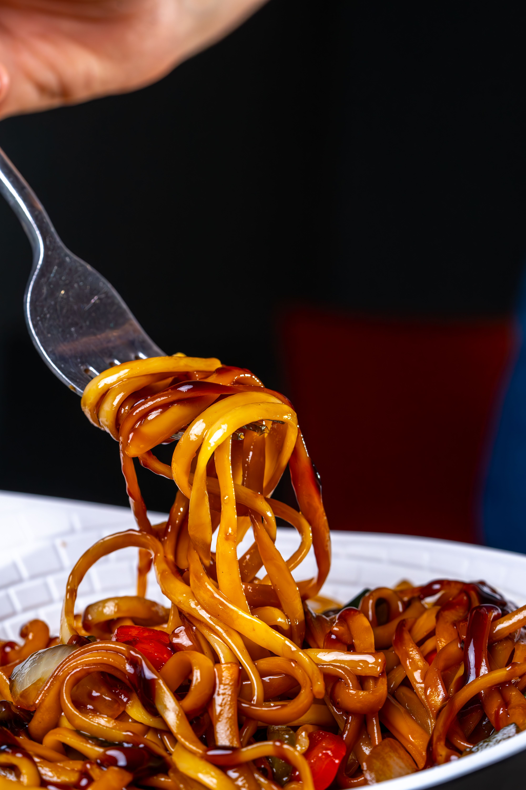

Quick Mongolian Noodles
For more easy and delicious recipes, please visit our home.

This delicious family dinner features tender strips off beef and noodles in a glossy, sweet mongolian-style sauce.
Ingredients
Sauce
- 2 tbsp oyster sauce
- 2 tbsp light soy sauce
- 1 tbsp dark soy sauce
- 1 tbsp hoisin sauce
- 1 1/2 tbsp brown sugar
- 60 ml water
Slurry
- 1 1/2 tbsp cornstarch
- 60 ml water
Noodles and Meat
- 600g beef rump (sirloin), trimmed and very finely sliced across the grain
- 400g fresh egg noodles
- 1 tsp sesame oil
- 2 tbsp light olive oil
- 1 large brown onion, finely sliced
- 2 tsp freshly grated garlic
- 4 spring onions, cut into 4cm lengths
To serve
- Chilli oil
Instructions
- Make the sauce - Whisk together all the sauce ingredients in a small bowl, and set aside.
- Make the slurry - Mix the cornstarch with the water in a seperate small bowl until smooth. Set aside.
- Marinade the meat - Place the beef or lamb in a medium bowl. Add 2 tablespoon of the prepared sauce and toss to coat.
- Cook the noodles - cook the noodles for 1 - 2 minutes less than the package instructions. Drain, rinse under cold running water to stop the cooking process, and toss with the sesame oil to prevent sticking. Set aside.
- Cook the meat - Heat 1 tbsp of the olive oil in a large wok or heavy-based frying pan over high heat. Add half the meat in a single layer and cook for 1 - 2 minutes per side until browned but still tender. Transfer to a plate and repeat with the remaining meat. Set aside.
- Cook the onion and garlic - Add the remaining tbsp of olive oil to the same pan. Add the onion and cook for 1 - 2 minutes until lightly caramelised. Add the garlic and cook for a further 30 seconds until fragrant.
- Make the sauce - Return the meat and any resting juices to the pan. Pour in the remaining sauce and bring it to a simmer. Give the cornflour slurry a quick stir, then pour it into the pan, stirring continuously. Cook for 60-90 seconds until the sauce thickens and becomes dark and glossy.
- Add the noodles - Add the noodles and spring onion to the pan. Toss gently until everything is evenly coated in the sauce and heated through.
- Serve - Divide among four bowls and serve immediately with chilli oil, if desired.